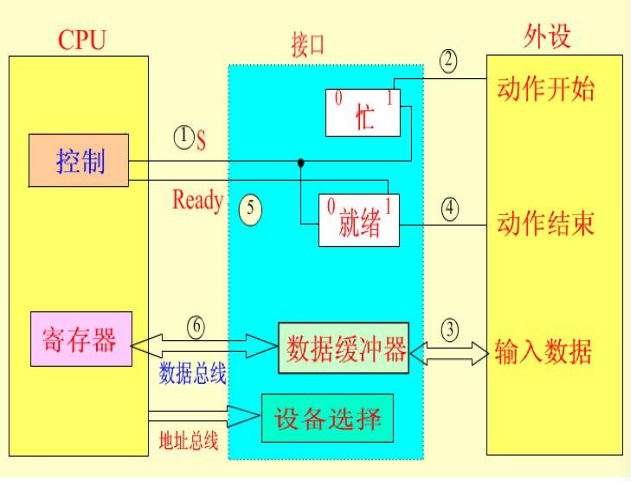
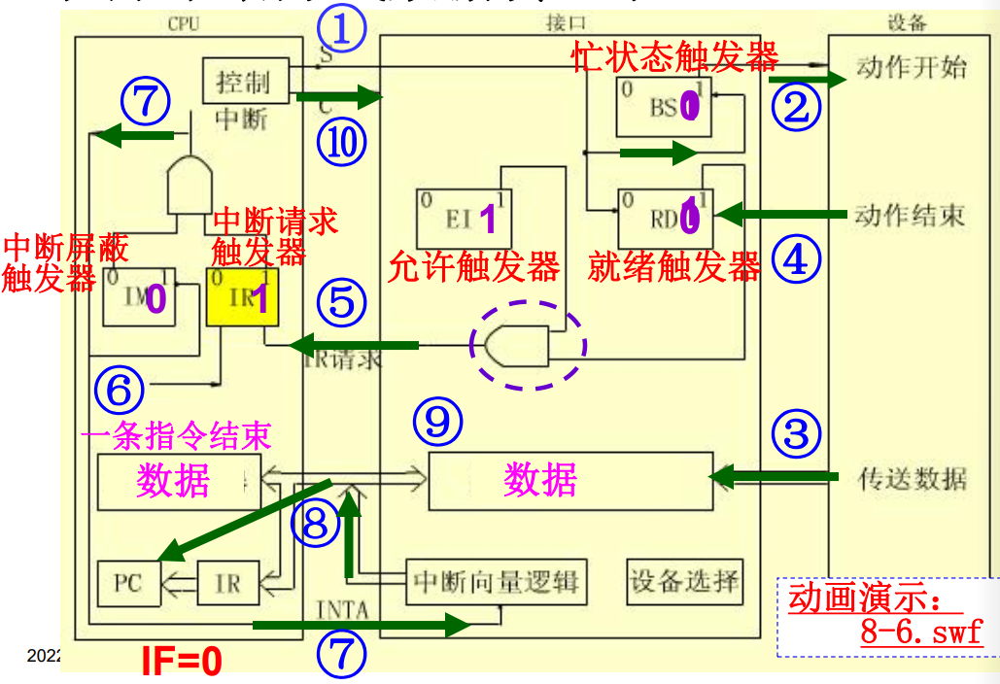
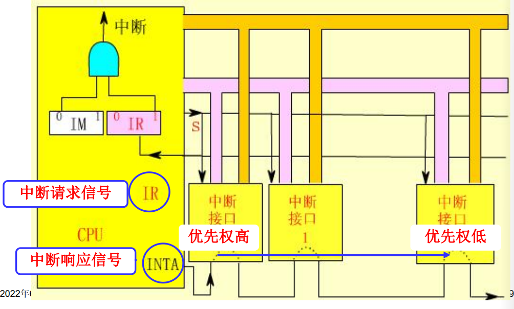

输入输出设备
外围设备的速度分级与信息交换方式
外围设备的速度分级
根据外设的工作射速，CPU和外设的定时方式有三种：
-
速度极慢或者简单的外围设备，使用CPU世界接收和发送数据
机械开关和LDE
-
慢速或者中速的外围设备，采用异步定时方式/应答式数据交换，CPU与外设之间通过两个相互的联络信号来决定开始数据传送的时间
键盘，显示器
-
高速的外围设备，采用同步定时的方式，CPU以等间隔的速度执行输入/输出指令
主存，辅存
外设信息交换方式
-
程序查询方式
早期计算机中使用，效率低。
-
程序中断方式
适用于随机出现的服务
-
直接内存访问
DMA方式适用于内存和高速外围设备之间大批量数据交换的场合
-
通道方式
增加一个具有特殊功能的处理器——通道，将CPU输入输出的权力下方
程序查询方式
数据的输入输出完全由程序控制。
设备编制
-
统一编址方式
将I/O系统与主存系统作为一个整体进行编址。
访问I/O端口可以使用访存指令，操作类型多样，使用灵活，且I/O端口也有较大的编址空间。
但是占用了主存空间，使得实际主存容量减小。I/O访问的指令字长较长，执行的速度慢。
-
独立编址方式
将I/O系统和主存系统分别编址。
I/O端口不占用主存空间，使用专用的I/O指令，执行速度快，与主存空间容易区分。
输入输出指令
输入指令：IN AL/AX, DX/PORT，从指定的端口读入一个字节/字数到累加器
输出指令：OUT DX/PORT, AL/AX，将累加器中的一个字节/字数送到指定端口输出
指令一般的功能有：
- 对于接口的控制触发器置0或者1，控制其进行某些操作
- 测试设备的某些状态
- 输入或者输出数据
程序查询方式的接口

CPU通过地址信号选中某设备接口。
CPU通过向该接口发送命令字的方式，启动外设。
当外设开始工作之后，设置当前“忙”状态。
CPU和外设通过接口内部的数据缓冲器传送数据。
程序查询输入/输出方式
- CPU请求数据传送
- CPU从I/O接口读入状态字
- 检查状态字中的标志
- 为就绪，则重复2.3.步
- CPU输入或者输出数据，同时复位接口中的状态标志。
可以通过改变查寻顺序修改设备的优先权。
程序中断方式
中断的概念
中断是指CPU正常运行程序时，由系统内/外部非预期事件或程序中预先安排好的指令性事件引起的，CPU暂停当前程序的执行，转去为该事件服务的程序中执行，服务完毕后，再返回原程序继续执行的过程。
需要注意的是：
- 中断是CPU执行程序的变化过程
- 所有能够引起中断的事件称为中断源
- 处理中断事件的中断服务程序是预先设计的
- 结束中断处理元程序之后，要以原状态附后返回暂停处继续执行
中断处理过程是由硬件和软件结合来完成的。
使用中断的好处为：
- 解决速度问题，使用CPU和I/O并行工作
- 对于意外的情况可以即使处理，例如磁盘损坏，运算溢出
- 在实时控制领域中，即时响应外来信号的干扰。
CPU的中断处理流程：
-
中断请求
CPU在结束一个指令周期后，检测中断请求信号。
就是CPU的公操作检测保存中断请求信号的寄存器
-
中断响应
关闭中断，保护断电现场，判断中断源，获取中断向量，根据中断向量转入中断服务程序运行。
关闭中断的目的是为了避免再次中断影响当前中断响应，屏蔽中断源。
保护断电现场是为了CPU还能回到主程序
-
中断服务
保护CPU现场，执行中断服务程序，打开中断，恢复CPU现场
-
中断返回
恢复断点现场，返回主程序继续执行。

中断向量：中断服务程序的入口地址，一共4个字节的内容，包括段地址和段内偏移地址。在CPU响应中断时，将中断源对应的中断向量送入段地址CS、段内偏移地址IP寄存器中，以跟踪中断服务程序的执行。
集中存放系统中所有中断向量的存储器就是中断向量表。中断类型号是中断向量在表中的编号，乘上中断向量的长度4字节，就是中断向量在表中的偏移地址。
硬件产生中断向量的方式有三种：
-
向量中断
由硬件直接产生一个与该中断源对应的向量地址，该向量地址就是中断源对应的中断服务程序入口地址。
但是这种方式要求在硬件设计时考虑所有中断源的向量地址。
-
位移量中断
由硬件产生一个位移量，该位移量加上CPU中某寄存器的基地址就是中断处理程序的入口地址。
-
向量地址转移
由硬件直接产生
程序中断方式的基本I/O接口
接口内部有下列组成部件：
- 数据缓冲寄存器
- 就绪触发器
RD，忙状态触发器BS，允许中断触发器EI - 中断向量产生逻辑
CPU中响应的处理部件是
- 中断请求触发器
IR - 中断屏蔽触发器
IM

单级中断
计算机系统中一般拥有多个中断。在处理时，有着如下两种处理策略：
- 单级中断：所有的中断源属于同一个中断，不允许有中断嵌套
- 多级中断：中断源分成不同的级别，可以发生中断嵌套，高优先权的中断源请求可以打断低优先权的中断服务
我们先分析单级中断：

在收到中断时识别中断源来源的方法是串行排队链法。